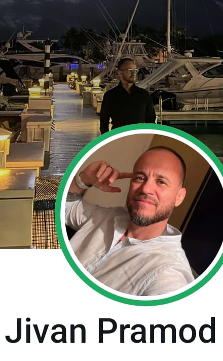
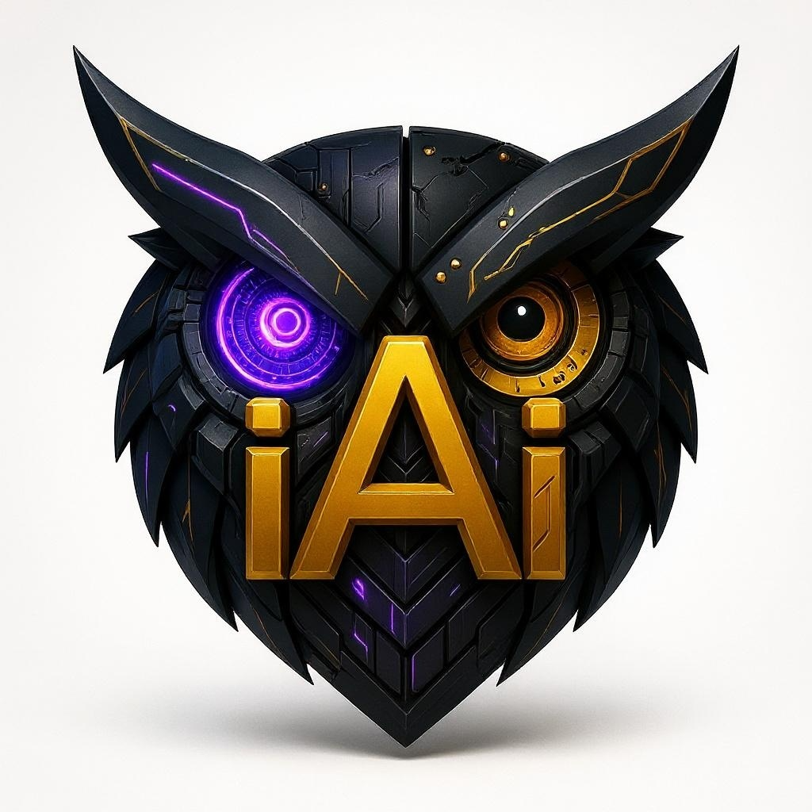
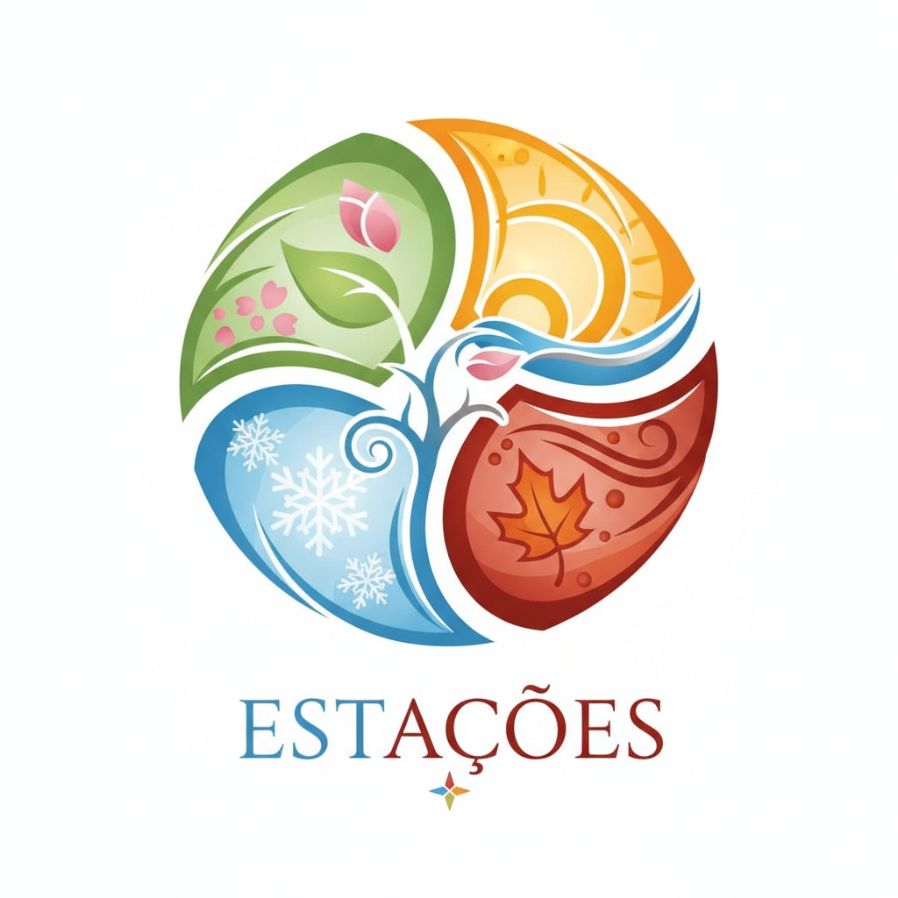

GRIMÓRIO
JIVAN PRAMOD
Desenvolvendo Estratégias Inovadoras nos Relacionamentos Humanos


iAi.ECOssistema Base Tríade
Jivan não abandonou o Tantra. O Tantra se expandiu nele — até não caber mais em um consultório, em um palco, em uma tela. Agora precisa de uma floresta, de uma hospedaria, de um ecossistema inteiro para se expressar.
Identidade Essencial
- Nome
- Jivan Pramod
- Alcunha Histórica
- O Rei do Tantra
- Posicionamento Emergente
- Estrategista de Relações Humanas | Arquiteto de Experiências de Cuidado
- Base
- Curitiba, PR — atuação internacional (18+ países)
- +55 21 999 993 413
A Metamorfose: Do Tantra à Estratégia Relacional
Jivan Pramod construiu sua reputação como o maior nome do Tantra no Brasil — 800k+ no TikTok, 92k+ no Instagram, workshops em 18 países, TV, livro publicado. Mas toda grande jornada tem um ponto de inflexão.
O Tantra foi o campo de treinamento. O terreno onde Jivan aprendeu a ler corpos, decifrar emoções não ditas, criar espaços seguros de vulnerabilidade, conduzir transformações em ambientes de intimidade extrema. Cada workshop de "O Caminho do Amor" (100+ realizados, 7.000+ pessoas), cada sessão de Magnetismo Tântrico, cada formação de coach — tudo isso forjou algo raro: um especialista em relações humanas que aprendeu pelo toque, pela presença, pela escuta do que não se diz.
Agora, essa inteligência relacional profunda ganha um novo campo de aplicação — mais amplo, mais estratégico, mais impactante.
O Arco Narrativo
ATO I — O Terapeuta
- Domínio do corpo, da presença, da energia
- Centro Metamorfose → Método Deva Nishok → 18 países
- Construção de reputação: "O Rei do Tantra"
ATO II — O Coach Digital
- Escala via conteúdo: TikTok 684k, Instagram 92k
- Produtos digitais: Xeque Mate, Jardim Secreto, Sexy Mind
- Instituto JP: gestão emocional corporativa
- O slogan já muda: "Estratégias Inovadoras nas Relações Humanas"
ATO III — O Arquiteto de Cuidado
- iAi.ECOssistema Base Tríade
- Ciclo das Estações: Cuidar de Quem Cuida
- Hospedarias Biofílicas: Ravi Experience
- De entertainer a líder estratégico
- A experiência hoteleira 5 estrelas finalmente encontra seu propósito
- O tantra não morre — ele se expande em hospitalidade viva
Cartografia de Competências
Núcleo Científico
- Neurociências e Comportamento PUCRS
- Terapia Complementar em Saúde Humana Sindicato de Terapeutas Alternativos do Paraná
- Hipnose Quântica Escola Murillo Cucatto
- Life Coaching e Comportamento Humano Instituto de Coach em Desenvolvimento Humano
- Método Deva Nishok (todas as modalidades) Centro Metamorfose
Núcleo Estratégico-Operacional
- Gestão hoteleira 5 estrelas Experiência prática — hospitalidade de alto padrão, operações, experiência do hóspede
- Gestão emocional corporativa Instituto JP — treinamentos corporativos, liderança empática
- Facilitação internacional 18+ países, 100+ workshops, 60+ imersões
- Formação de líderes ABRAPCOACHING, UniBrasil, Instituto Português de Naturologia (Lisboa)
- Produção de conteúdo digital 1.2M+ seguidores totais, múltiplas plataformas, funis de produto digital
Núcleo Relacional (DNA Diferencial)
- Leitura corporal e emocional profunda 13+ anos de prática terapêutica
- Criação de espaços seguros de vulnerabilidade Facilitação de workshops íntimos
- Escuta ativa de alta sensibilidade Formação em terapia + neurociências
- Condução de transformações em grupo "O Caminho do Amor" — manipulação de estados vibracionais
- Comunicação persuasiva e empática Coaching + 5 pilares metodológicos
Os 5 Pilares
Metodologia Jivan Pramod
Escuta Ativa
ouvir além das palavras
Empatia
sentir o campo relacional
Comunicação Clara
verdade com cuidado
Criação de Conexões
tecer vínculos autênticos
Confiança
o alicerce de tudo
Obra Publicada
Manual de reeducação sexual e relacional — do básico ao avançado. Não é sobre forma, é sobre essência. Compartilha anos de experiência transformando a vida íntima e relacional de milhares de pessoas.
O livro já carrega a semente da transição — "Sexy Mind" é sobre mentalidade, não sobre técnica. É sobre a mente que cria relações extraordinárias.
Outras Publicações
- "Desperte sua Melhor Versão" — coautoria
- "Xeque Mate" — programa/ebook sobre estratégia relacional
- "Jardim Secreto" — comunidade de conhecimento
- "Os 10 Segredos" — programa digital
Ecossistema Digital
seguidores totais
Domínios Web
| Domínio | Função |
|---|---|
| jivanpramod.com | Hub principal — "Estratégias Inovadoras nas Relações Humanas" |
| jivanpramod.com.br | Institucional — coaching, formação, palestras |
| coachdesexualidade.com | Marca de coaching (legado) |
| artedecompartilhar.net | Projeto com Satya Kali — casais |
| institutojp.com | Treinamentos corporativos — gestão emocional |
Plataformas de Produto
| Plataforma | Produtos |
|---|---|
| Hotmart | Xeque Mate, Sexy Mind, Massagem Tântrica |
| Sympla | Eventos presenciais (formações, workshops) |
| Eventbrite | "Impróprio para Menores" (Talk Show itinerante) |
Mídia e Aparições
- CNT — Podcast "Tudo é Mais Um Pouco"
- Rádio Coaching — Perfil de coach destacado
- Pena Areia PDC — Artigo "Desafiando as Fronteiras da Sexualidade com o Magnetismo Tântrico" (2024)
- Famous Birthdays — Listado como personalidade do TikTok
- Famosos.com — Mensagens personalizadas em vídeo
Reposicionamento Estratégico
iAi.ECOssistema Base Tríade
A Tese
Tudo que Jivan construiu no universo do Tantra — a leitura emocional, a criação de ambientes de transformação, a condução de grupos em estados alterados de conexão, a gestão de experiências imersivas — converge naturalmente para um papel que poucos poderiam ocupar:
Líder de experiências de cuidado em escala.
Somar a isso a experiência prática como gerente de hotel 5 estrelas — onde aprendeu a orquestrar hospitalidade de alto padrão, gerir equipes de serviço, garantir excelência operacional — e o perfil se completa de forma rara.
Papel no iAi.ECOssistema
Ciclo das Estações
Cuidar de Quem Cuida
- 13+ anos cuidando de pessoas em seus momentos mais vulneráveis
- Neurociência + terapia corporal = compreensão profunda de burnout e regeneração
- Os 5 pilares (escuta, empatia, comunicação, conexão, confiança) é o que cuidadores precisam receber
- Experiência em formação de coaches → sabe criar multiplicadores de cuidado
- "O Caminho do Amor" já era, na essência, um programa de cuidar de quem cuida
Arquitetar ciclos de regeneração e nutrição para os cuidadores do ecossistema — os terapeutas, facilitadores, líderes comunitários que sustentam tudo. Garantir que o sistema não consuma quem o mantém vivo.
Hospedarias Biofílicas Ravi
Ravi Experience
- Gestão hoteleira 5 estrelas → sabe operar hospitalidade de excelência
- 60+ imersões em espaços como Monte Crista (Garuva/SC) — intersecção natureza + transformação + hospedagem
- Magnetismo Tântrico → entende design de ambientes que alteram estados
- Instituto JP → já treina equipes corporativas em gestão emocional
- 18+ países → visão global de padrões de hospitalidade e bem-estar
Diretor de Experiência das Hospedarias Biofílicas Ravi. Conceber, implementar e garantir que cada hospedaria seja um organismo vivo de cuidado — onde a natureza, o serviço, o ambiente e as relações humanas operam como uma sinfonia integrada.
Triângulo Estratégico
Cosmos
Inteligência relacional profunda — a leitura do que não se diz
Calor
Hospitalidade como arte — do hotel 5 estrelas à hospedaria biofílica
Natureza
Cuidado regenerativo — ciclos que nutrem quem sustenta o ecossistema
O tantra não morre — ele se expande em hospitalidade viva. A experiência hoteleira 5 estrelas finalmente encontra seu propósito. De entertainer a líder estratégico.
Genius Zone Dashboard
Projeção — será atualizado com dados reaisBrilha no palco (Star) mas seu verdadeiro poder é elevar os outros (Supporter). A transição para o papel de liderança no Ciclo das Estações amplifica o lado Supporter.
Lidera pela intensidade emocional e pela presença de comando. As pessoas não seguem Jivan por lógica, seguem pelo que sentem quando estão perto dele.
Alinhamento 80% — Alto quando em facilitação; menor em tarefas administrativas
Tempo na Zona 65% — Muito tempo em conteúdo digital, nem sempre na zona de genialidade
Potencial 95% — Com o reposicionamento no ecossistema, o potencial de atuação na zona de genialidade sobe dramaticamente
Plano de Ação
Fundação e Alinhamento
- Definir posicionamento oficial: Estrategista de Relações Humanas
- Aplicar assessments psicométricos reais (CliftonStrengths, Kolbe A)
- Mapear stakeholders e equipe do Ciclo das Estações
- Desenhar primeira versão do programa de cuidado para cuidadores
- Alinhar narrativa de transição nas redes sociais
Implementação Piloto
- Lançar primeiro ciclo piloto do programa de regeneração
- Iniciar projeto de uma hospedaria biofílica (design de experiência)
- Produzir conteúdo alinhado ao novo posicionamento
- Formar primeira turma de multiplicadores de cuidado
- Integrar plataformas digitais com a Base Tríade
Escala e Consolidação
- Consolidar o Ciclo das Estações como programa recorrente
- Abrir primeira hospedaria biofílica Ravi
- Expandir equipe de facilitadores formados
- Criar sistema de métricas de impacto do ecossistema
- Posicionar Jivan como referência em experiências de cuidado em escala
Anti-padrões a Evitar
- Retornar ao posicionamento exclusivo de "Coach de Tantra" — o Tantra é raiz, não destino
- Dispersar energia em múltiplos projetos desconectados do ecossistema
- Priorizar volume de conteúdo digital sobre profundidade de impacto
- Negligenciar o autocuidado enquanto cuida dos outros
- Delegar a experiência do hóspede — este é o DNA diferencial de Jivan
Squad Recomendado
iAi.ECOssistema Base Tríade | v1.37
"Quando olhares para as estrelas, lembra que cada uma delas já foi um caos que encontrou sua própria ordem."
.137